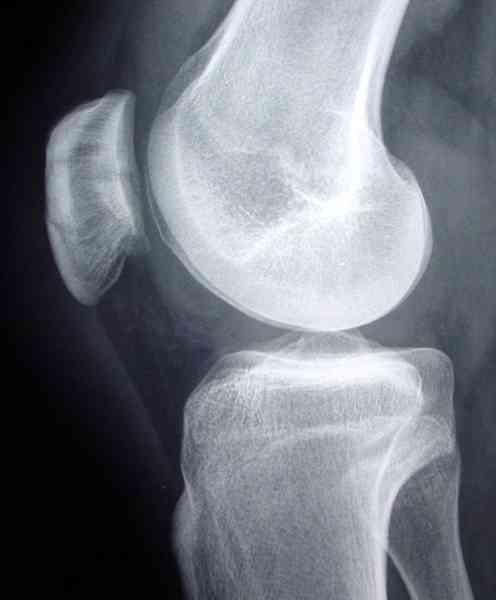

Bienvenue Sur Medical Education
Fractures : rotule
Spécialité : traumatologie /
Points importants
-
Tout choc direct sur la rotule doit faire éliminer une fracture de la rotule
Présentation clinique / CIMU
SIGNES FONCTIONNELS
-
Douleur ++ localisée à la rotule lors de la mobilisation de l'articulation du genou
-
L'impotence fonctionnelle peut être totale
CONTEXTE
Présentation clinique / CIMU
SIGNES FONCTIONNELS
- Douleur ++ localisée à la rotule lors de la mobilisation de l'articulation du genou
- L'impotence fonctionnelle peut être totale
CONTEXTE
Circonstances de survenue
- Il s'agit souvent d'un choc direct sur la rotule
EXAMEN CLINIQUE
Inspection
- Rechercher un hématome en regard de la rotule : «gros genou tuméfié»
- Recherche de lésions cutanées à la face antérieure du genou (fracture ouverte)
Palpation
- Recherche d'une dépression transversale en regard de la rotule ou/et un déficit d'extension actif du genou signant une fracture transversale avec diastasis inter-fragmentaire
Signes paracliniques
RADIOGRAPHIE
-
Les radiographies doivent comporter systématiquement des défilés à 30° car la fracture peut passer inaperçue sur l'incidence de face ou de profil
Diagnostic étiologique
Diagnostic étiologique
On distingue
-
Les fractures transversales :
- plus ou moins complexes
- elles interrompent l'appareil extenseur
- entraînant un déficit d'extension active
_483 Photo Fracture transversale de la rotule avec 3e fragment intermédiaire
-
Les fractures sagittales :
- elles n'entraînent pas de déficit de l'extension du genou
_484 Photo Fracture sagittale de la rotule : incidence de face
_485 Photo Fracture sagittale de la rotule : vue aérienne (défilé) de la rotule
-
Les fractures parcellaires :
- il faut faire attention à la luxation spontanément réduite de la rotule (cf. Luxation traumatique de la rotule)
- les autres types de fractures sont plus rares et s'accompagnent volontiers de lésions cutanées en regard
Diagnostic différentiel
-
Patella bipartita :
-
diagnostic différentiel relativement fréquent (d'où l'intérêt de faire des clichés comparatifs car il s'agit souvent d'une anomalie bilatérale)
- diagnostic différentiel relativement fréquent (d'où l'intérêt de faire des clichés comparatifs car il s'agit souvent d'une anomalie bilatérale)
_486 Photo Patella bipartita
Traitement
TRAITEMENT INITIAL
Avant la radio
- Traitement de la douleur dès l'accueil
-
Co-analgésie :
- Protocole RICE : patient sur un brancard, membre à l'horizontal (interdiction de fléchir le genou +++)
- immobilisation au mieux avec sac de sable ou orthèse d'immobilisation
Après la radio
-
Fractures transversales ou complexes :
-
déplacées : traitement chirurgical
- _487 Photo Ostéosynthèse par un hauban sur 2 broches de la fracture transversale de la rotule : incidence de face
- _488 Photo Ostéosynthèse par un hauban sur 2 broches de la fracture transversale de la rotule: incidence de profil
- non déplacées : traitement orthopédique avec immobilisation dans un plâtre
-
déplacées : traitement chirurgical
_489 Photo Fracture non déplacée de la rotule pouvant bénéficier d'un traitement orthopédique : incidence de face
 _490 Photo Fracture non déplacée de la rotule pouvant bénéficier d'un traitement orthopédique : incidence de profil
_881
- - -
Plâtre cruro-pédieux
Fractures transversales ou complexes non déplacées
Fractures sagittales non déplacées Auteur(s) : Jean-Jacques BANIHACHEMI, Dominique SARAGAGLIA
MEDICAMENTS
Surveillance
Devenir / orientation
CRITERES D'HOSPITALISATION
CRITERES DE SORTIE
ORDONNANCE DE SORTIE
RECOMMANDATIONS DE SORTIE
Bibliographie